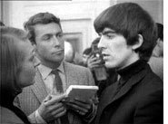

看看披頭的幽默和機智。 網路上找到一些很有意思的記者會問答：
Press: How did you find America?
John: Turn left at Greenland.
Press: Are you a mod or a rocker?
Ringo: I'm a mocker.
Press: What do you call that hairstyle?
George: Arthur.

（以上三段問答是出自電影A Hard Day's Night的記者會片段）
Press: What do you think of the comment that you're nothing but a bunch of British Elvis Presleys?
Ringo: (shaking like Elvis) It's not true!! It's not true!!
John: (dances like Elvis) He must be blind.
Press: Does it bother you that you can't hear what you sing during concerts?
John: No, we don't mind. We've got the records at home.
Press: Are you going to have a leading lady for the film you're about to make?
Paul: We're trying to get the Queen. She sell in England, you know.
Press: Aren't you tired of all the hocus-pocus? Wouldn't you rather sit on your fat wallets?
Paul: When we get tired we take fat vacations on our fat wallets.
Press: Beethoven figures in one of your songs. What do you think of Beethoven?
Ringo: I love him. Especially his poems.
Press: Did you really use four letter words on the tourists in the Bahamas?
John: What we actually said was "Gosh".
Paul: We may have also said "Heavens!".
John: Couldn't have said that, Paul. More than four letters.
Press: Do you have any special advice for teenagers?
John: Don't get pimples.
Press: Do you like topless bathing suits?
Ringo: We've been wearing them for years.
Press: Do you speak French?
Paul: Non.
Press: Do you wear wigs?
John: If we do, they must be the only ones with real dandruff.
Press: Does your hair require any special attention?
John: Inattention is the main thing.
Press: Don't you ever get a haircut?
George: I had one yesterday.
Ringo: You should have seen him the day before.
Press: What do you look like with your hair back on your foreheads?
John: You just don't do that, mate. You feel naked if you do that, like you don't have any trousers on.
Press: How many of you are bald, that you have to wear those wigs?
Paul: I'm bald.
Ringo: All of us.
Press: You're bald?
John: Oh, we're all bald, yeah.
Paul: Don't tell anyone, please.
George: And deaf and dumb, too.
Press: How do you feel about teenagers imitating you with Beatle wigs?
John: They're not imitating us because we don't wear Beatle wigs.
Press: How do you feel about a nightclub called Arthur, named after your hair style?
George: I was proud--until I saw the nightclub.
Press: What is the biggest threat to your careers, the atom bomb or dandruff?
Ringo: The atom bomb. We've already got dandruff.
Press: Where did you get your hair style?
Paul: From Napoleon. And Julius Caesar too. We cut it anytime we feel like it.
Ringo: We may do it now.
Press: How tall are you, Ringo?
Ringo: Two feet, nine inches.
Press: Is it true you can't sing?
John (pointing to George): Not me. Him.
John: No more unscheduled public appearances. We've had enough. We're going to stay in our hotel except for concerts.
Press: Won't this make you feel like caged animals?
John: No. We feed ourselves.
Press: Paul, you look like my son.
Paul: You don't look a bit like my mother.
Press: Ringo, what started your practice of wearing four rings at once?
Ringo: Six got to be too heavy.
Press: Ringo, why do you wear two rings on each hand?
Ringo: Because I can't fit them through my nose.
Press: Were you worried about the oversized roughnecks who tried to infiltrate the airport crowd on your arrival?
Ringo: That was us.
Press: What about this campaign in Detroit to stamp out the Beatles?
Paul: We're starting a campaign to stamp out Detroit.
Press: What did you think when your airplane's engine began smoking as you landed today?
Ringo: Beatles, women, and children first!
Press: What do you think of the criticism that you're not very good?
George: We're not.
Press: What is the reason you are the most popular singing group today?
All four: Don't know. No idea.
John: If we knew, we'd get together four boys with long hair and be managers.
Press: When are you starting your next movie?
Paul: In February.
George: We have no title for it yet.
Ringo: We have no story for it yet.
John: We have no actors for it yet.
Press: When you do a new song, how do you decide who sings the lead?
John: We just get together and whoever knows most of the words sings the lead.
Press: Why is it that you Ringo get more fan mail than the others?
Ringo: I dunno. I suppose it's because more people write me.
Press: Will you sing something for us?
All four: NO!
Press: Can you sing at all?
Ringo: No, we need money first.
Press: Would you like to walk down the street without being recognized?
John: We used to do this with no money in our pockets. There's no point in it.